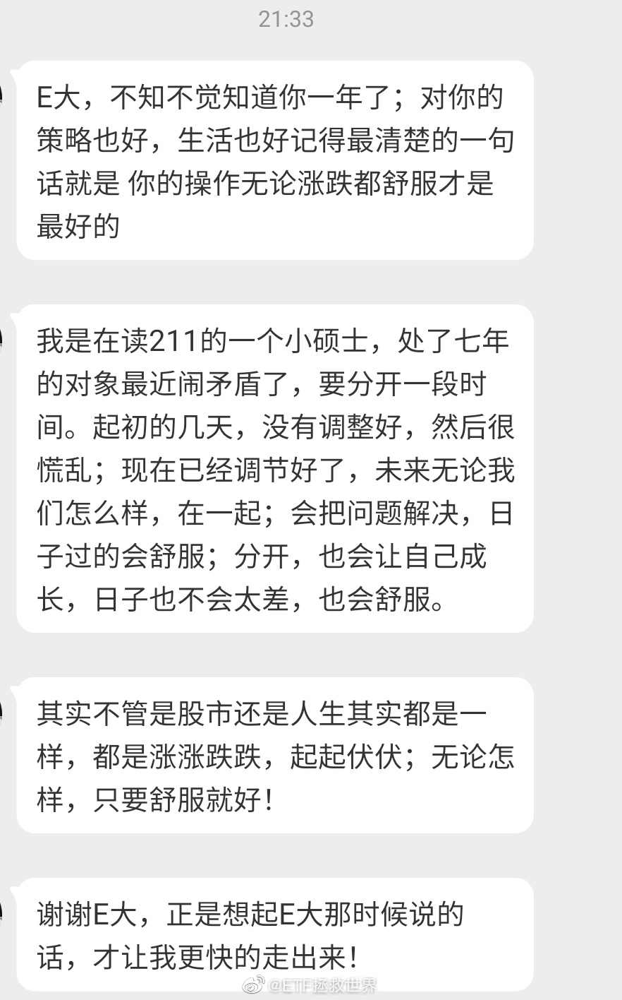
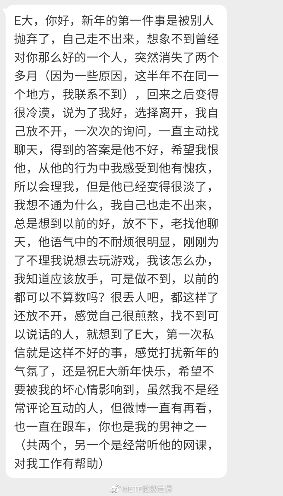

打开私信，每十条有三条是关于分手和被分手的。看来新的一年开始，让很多人想要开始新的生活啊。走不出来的朋友，怎么说呢，交给时间吧。时间会冲淡一切。再找一个更好的，忘了ta。不爱了，勉强在一起双方都会痛苦。长痛不如短痛，就这样吧。下一个更好。 
回复@洗头狂魔:神奇的人。别人要送朋友东西，你凑过来说太土了，别的牌子不好吗？我去，真的长见识了。你这种人人缘肯定特别好。//@洗头狂魔:回复@ETF拯救世界:好心给建议还经不起正经评价了。那你送吧，看看人家会不会喜欢。心心眼土鳖@ETF拯救世界:如果，我是说如果啊。如果有个非常nice的朋友（或者博主）要送你香水，你想要迪奥，古驰还是香奈儿。评论选择之后留性别。
回复@诅影:医疗就是治疗器械医疗、服务等，比如呼吸机口罩专科医院之类。医药是药（中西药）+医疗。//@诅影:虽然能看懂医疗和医药的字面意思区别，但并不懂市场上哪些是医疗哪些是医药，不过并不惆怅，知道跟车就对了。@ETF拯救世界:医疗崩，医药不崩，我很惆怅。
我对投资的理解，新朋友可以看一下。我用一个例子来解释。就是种地。当然我没种过地，但大致应该形容的不错。首先你的买入，相当于春天播种。你能不能想象今天种下去明天就有收成？客观来看不行对吧。当然，有一种情况可以，我最后说。种完了，你时不时浇点水，除除草，施施肥，然后等着。等过了春天，过了夏天，到了秋天，才可以收割。周而复始。所以你不能要求一个真正赚大钱的，长期看稳妥的投资是今天买明天赚后天卖。这不科学。有一种情况是可以的，就是你秋天来了。别人收割春天埋下的种子长成的果实的时候，你也来了。你来捡地上别人掉的三瓜两枣。好，你发现今天来今天就能捡到，你可太高兴了，原来捡果实这么容易。马上打电话摇银儿，把三姑六婆七姑八姨都找来一起捡（相当于储蓄搬家加仓）。结果捡了没几天，人家收割完了，冬天也来了。不仅你要挨饿，所有的亲戚（后期的加仓）都要挨饿。惨一点的还要饿死冻死。人家聪明人在暖和的屋子里躲了一冬，喝着热可可，吃着大餐。春天把存下的更多的种子拿出来种，然后等，然后收割，然后一帮“更聪明的人”又在秋天来赚快钱，然后冻死……你真的不觉得今天投入明天，或者下个月就要有好收益是一个很可笑的事情吗？到底世界上有什么生意是刚投入就能有持续的好回报的？除了刑法上规定的那些？